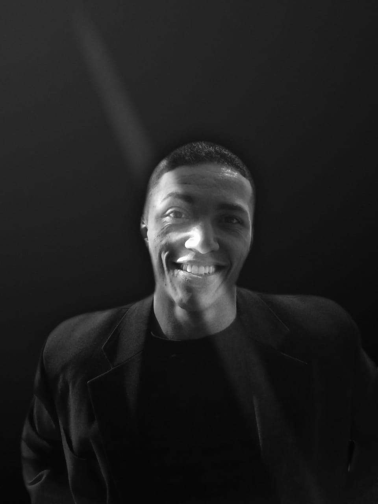

-

Matheus Gomes Da Silva
Desenvolvedor Web Full-Stack
Tel: (21) 97280-6023
MatheusDev1710@hotmail.com
-
Me chamo Matheus Gomes,
tenho 25 anos, moro em RJ/Bonsucesso na comunidade Morro do Adeus.
Atualmente estou desempregado, trabalhei há 5 anos como Aux.Administrativo começando como Jovem Aprendiz do CampMangueira.
Saí da última empresa para ABRAÇAR essa grande oportunidade que agora estou.
Quando estou com tempo livre gosto de ler, assistir alguns filmes e séries, normalmente os gêneros dos livros são de Autoajuda, Biografias e Transformação Pessoal.
-
Meus hobbies certamente é alguns esportes, como
atletismo, luta (taekwond), treinamento funcional e etc.
Acrescentando mais um como já foi mencionado mais acima, é ler, área de investimentos, artigos e noticias.
-
Meus interesses atualmente é alguns como me profissionalizar em uma área,
estou fazendo de tudo para que a área de programação seja minha profissão e fazer uma faculdade.
Pensando a longo prazo penso em dois interesses, contiuar no atletismo para fazer ultra-maratoras e a outra é dá continuidade ao montanhismo para escalar em alguns estados.